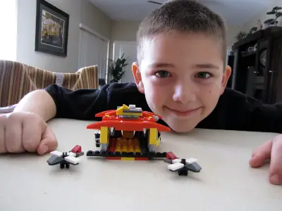
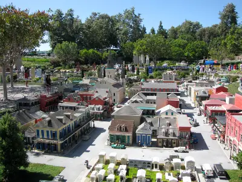

My LEGO Collection
Why do I love LEGO?
I grew up with LEGO in my home, but it wasn't until I was a mom of LEGO lovers that I really became passionate about them. My oldest, Isaak, loved LEGO from a very young age, he was very creative with coming up with his own creations. Watching him come up with some amazing things sparked more interest in me. Our first trip to LEGOLAND California, in the summer of 2009, is where I think my passion really began. The clincher was when I saw MINILAND USA. I was enthralled with all the miniature versions of places I have been or wanted to see. After that I was hooked and my obsession began. I am not as creative as my son at coming up with new designs, but put a pile of LEGO in front of me with some instructions and I am a whiz at putting them together quickly. This building has become a way for me to wind down and relax.


Featured Sets
Want to see all my LEGO sets?
View My Gallery